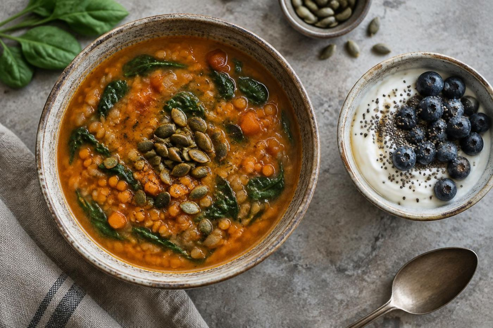

Reveal
Investigate symptoms and identify possible root causes.

Alicia Galvin · MEd, RD, LD, IFNCP
Functional nutrition education, mentoring, and clinical insight for complex GI cases and the professionals who care for them.
The Functional GI Dietitian · Dallas, Texas · Virtual
A root-cause perspective
“If you find the root cause, you will find the path to rebuilding health.”

Alicia’s approach looks for patterns and underlying imbalances, then works through targeted nutrition support with the patient. Her website describes the approach in four steps: Reveal, Remove, Replace, and Rebuild.
Explore the client approach ↗Investigate symptoms and identify possible root causes.
Address imbalances and provide needed nutrition support.
Collaborate on nutrition strategies for ongoing support.
About Alicia
Alicia brings dietetics training, counseling education, and years of GI-focused practice to her work with clients and nutrition professionals.
She earned a BS in Nutritional Sciences from Texas A&M University and a Master of Education in Counseling from the University of North Texas.
Her bio says she has practiced in the Dallas–Fort Worth area since 2010 and founded her private practice in 2013.
Her website identifies her as a Clinical Science Liaison on the company’s Clinical Education Team and co-founder of SIBO Academy.
At a glance
Alicia’s public profile combines functional nutrition practice, clinical education, and support for fellow dietitians.
Areas of focus
These areas are listed in Alicia’s public biography and client information.
Her profile highlights gastrointestinal health, including IBS, SIBO, ulcerative colitis, and Crohn’s disease, with therapeutic nutrition approaches.
Read the GI Guide ↗Her listed focus areas also include autoimmune conditions, autoimmune thyroid disease, chronic inflammation, and therapeutic diets.
Client information ↗Through mentoring, courses, and clinical education, Alicia supports practitioners working with complex GI cases and functional labs.
Professional services ↗For nutrition professionals
Alicia’s professional services include case mentoring, functional lab review, business consultation, speaking, and education for clinicians.
Explore professional servicesClinical cases, lab reviews, protocols, and a second professional perspective.
Development, integration, or expansion of a functional nutrition practice.
Corporate consultation, workshops, webinars, and continuing education resources.

SIBO Academy
Alicia co-founded SIBO Academy, an online training resource for dietitians and healthcare providers. Its listed topics include SIBO testing and interventions, dietary approaches, and advanced SIBO education.
Learn more
Explore Alicia’s public GI information, professional education, and related programs.
Information about GI health, food sensitivities, IBS, and related nutrition topics.
Training and support for clinicians who work with complex GI patients.
Online GI-health education and clinician courses.
The dietitian
Functional GI dietitian, clinical science liaison, mentor, and educator.
Credentials & education
Alicia holds a BS in Nutritional Sciences from Texas A&M University, an MEd in Counseling from the University of North Texas, and the IFNCP credential through the Integrative and Functional Nutrition Academy.
Read Alicia’s full bio ↗Professional affiliations
Her website lists affiliations with the Academy of Nutrition and Dietetics, Texas and Dallas affiliates, SCAN, Nutrition Entrepreneurs, and Dietitians in Integrative and Functional Nutrition. It also notes her former Nutrition Entrepreneur Mentor Coordinator role.
View LinkedIn profile ↗Choose your path
Find information for nutrition clients, dietitians, and organizations seeking education.
Connect
The official website currently says the practice is full, with individual sessions considered case by case. It also lists virtual and Dallas-area availability.
Contact AliciaEmail Alicia ↗Make your own palette
For clear contrast, pair a light page with dark text or a dark page with light text.